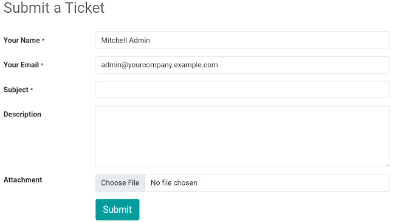
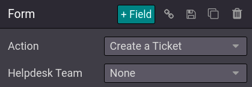

Customer interaction¶
Odoo offers many ways to interact with customers and for customers to interact with your website.
Product reviews¶
Customers can give a rating to your products. This is a great way to promote your products or services since reviews can influence purchase processes. To activate the rating feature, from your shop page, select a product, go to and enable Rating.

Note
Only portal users which purchased the product or service can leave ratings.
Tip
Customer reviews can be hidden by clicking the Visible button next to a published review.
Live chat¶
A chatbot is available and can simulate a human-like conversation with website visitors via text messages in a chat box.
Contact forms¶
Helpdesk¶
Customers may need support after purchasing a product or subscribing to a service. It is possible to create a contact form, which, when fulfilled, automatically creates a new ticket for your support team.
To add a contact form, create a new page () if necessary, and drag and drop a Form block from the Dynamic Content section onto the page. Once placed, click on the form (while in Edit mode), and in the Action field, select Create a Ticket. You can then select to which Helpdesk team the ticket should be assigned.
Contact us¶
A ‘Contact Us’ page makes it easier for customers and prospects to contact your company and get in touch.
To have a ‘Contact Us’ page, create a new page () if necessary, and click on . Then, drag and drop a Form block onto the page. Select the form and define the action to be performed when submitted in the Action field.
When clicking on a field, or when adding a new field (+ Field), you can select its Type. This enables different options, such as Multiple Checkboxes, which customers can use to indicate the services they are interested in, for example.


Newsletter¶
Customers can get updates on your eCommerce activities by subscribing to a newsletter. Visitors subscribing to the newsletter are automatically added to the mailing list of the Email Marketing application. You can either choose a newsletter block, a newsletter popup, or both.
Popup: prompts up a newsletter box when visitors scroll down the page;
Block: displays a field on the page where customers can sign up by entering their email.
The newsletter block can be configured according to different Templates. To do so, click the block while in , and select a Template in the Newsletter Block section. There are three templates available:
Email Subscription: visitors can sign up by email to the newsletter, without any choice to the content. The content is defined in in the Newsletter field;
SMS Subscription: is the same as Email Subscription, but by SMS;
Form Subscription: allows adding several fields, as well as a checkbox for the visitor to agree to the GDPR policy of your website.

Tip
Alternatively, you can select Subscribe to Newsletter as Action when creating a contact form, allowing for the same level of customization. Make sure to add a checkbox stating visitors agree to be added to the mailing list.